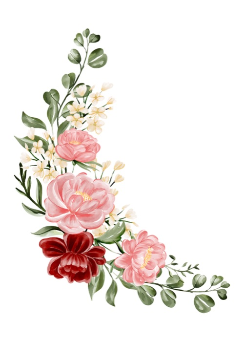
Jordan & Julia
November 12, 2026
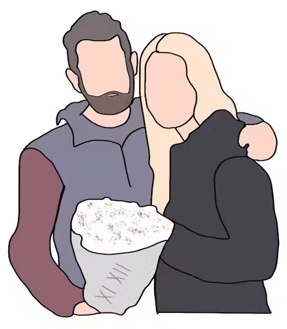

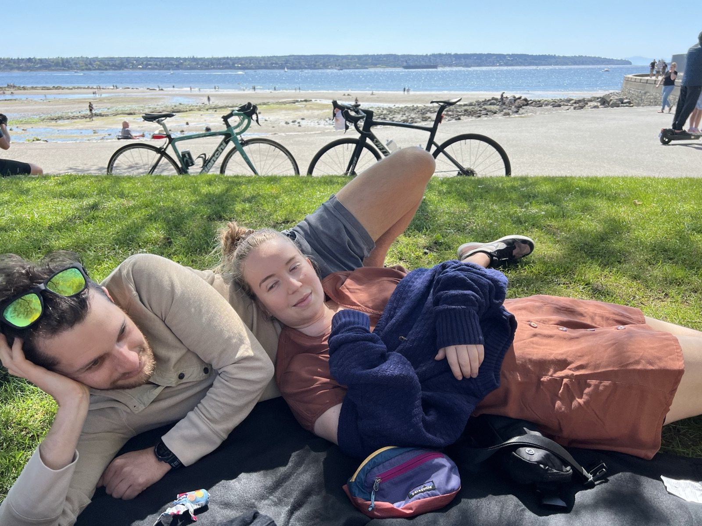
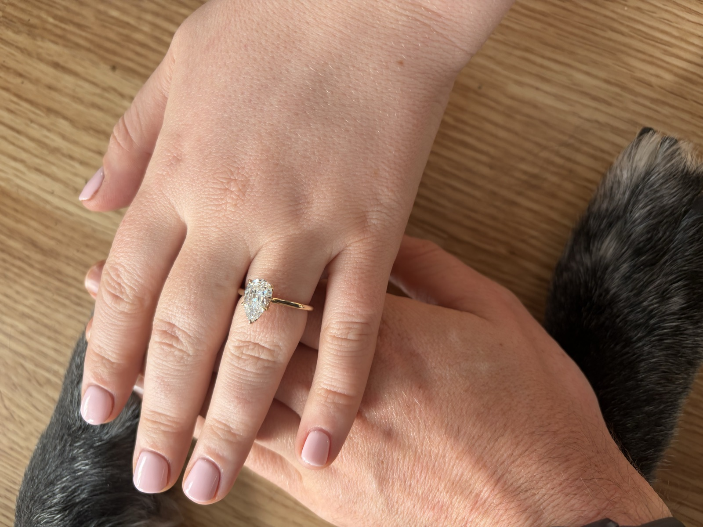
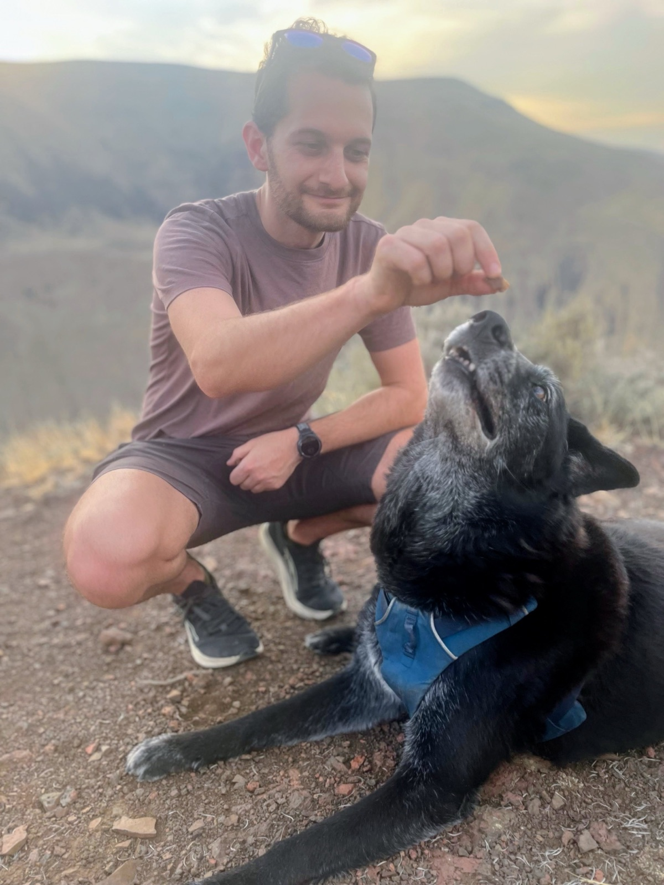
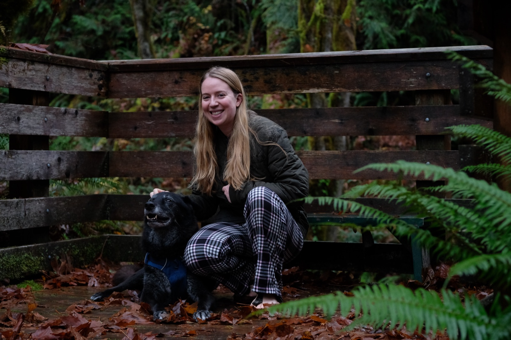
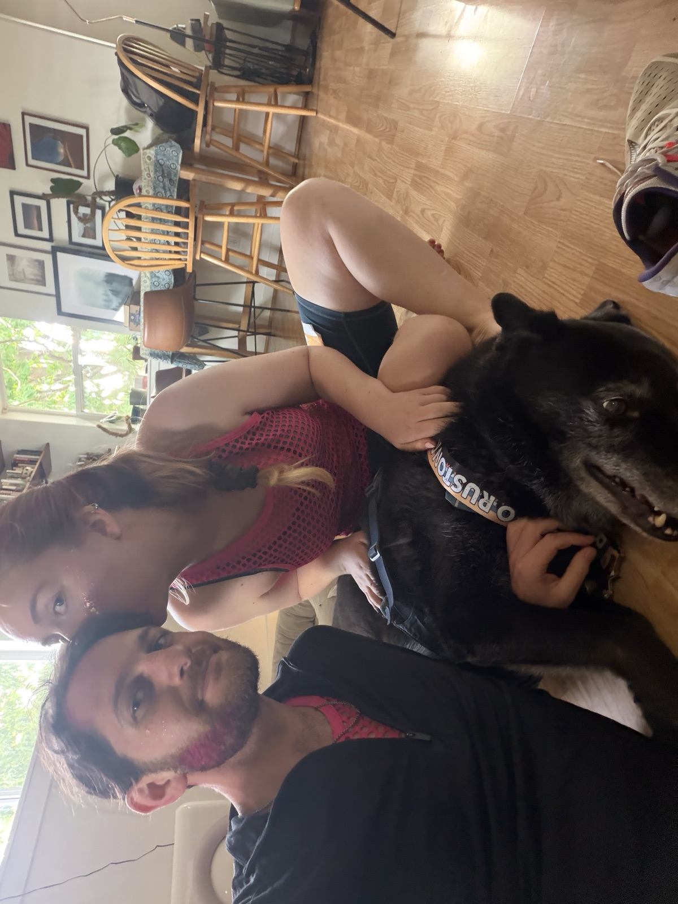
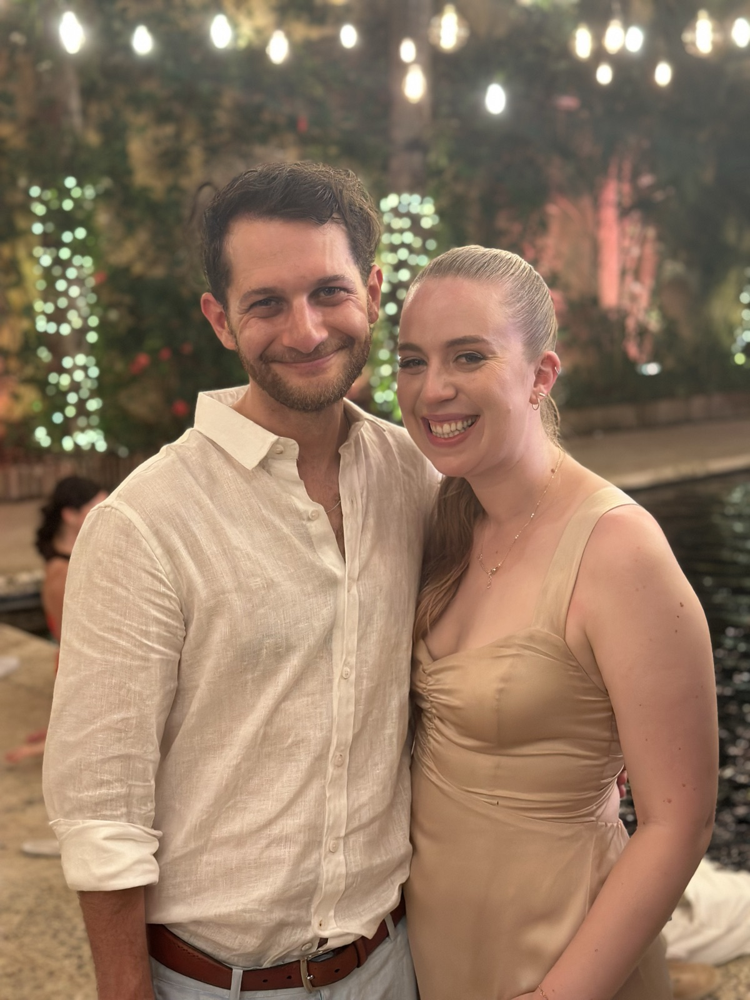
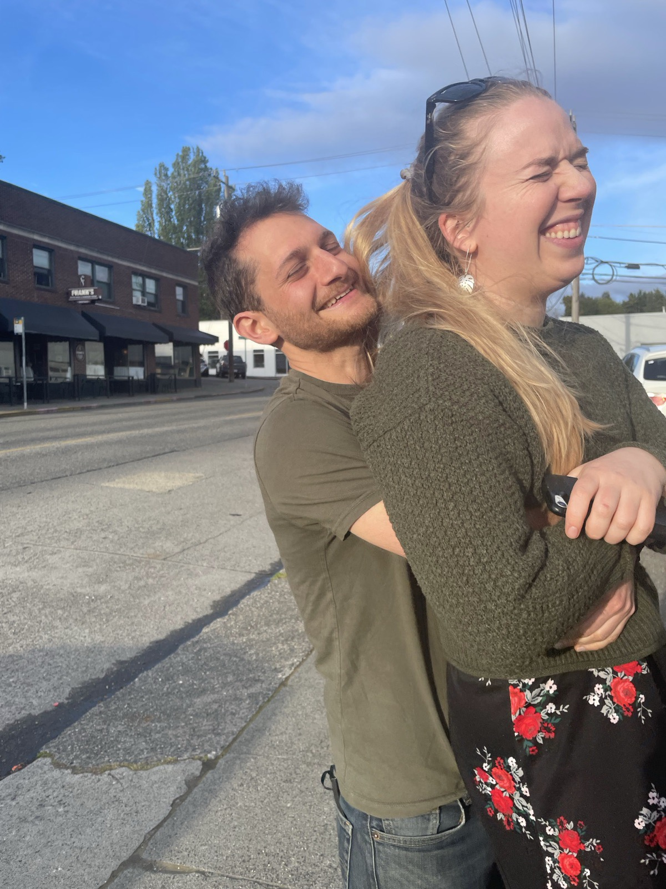
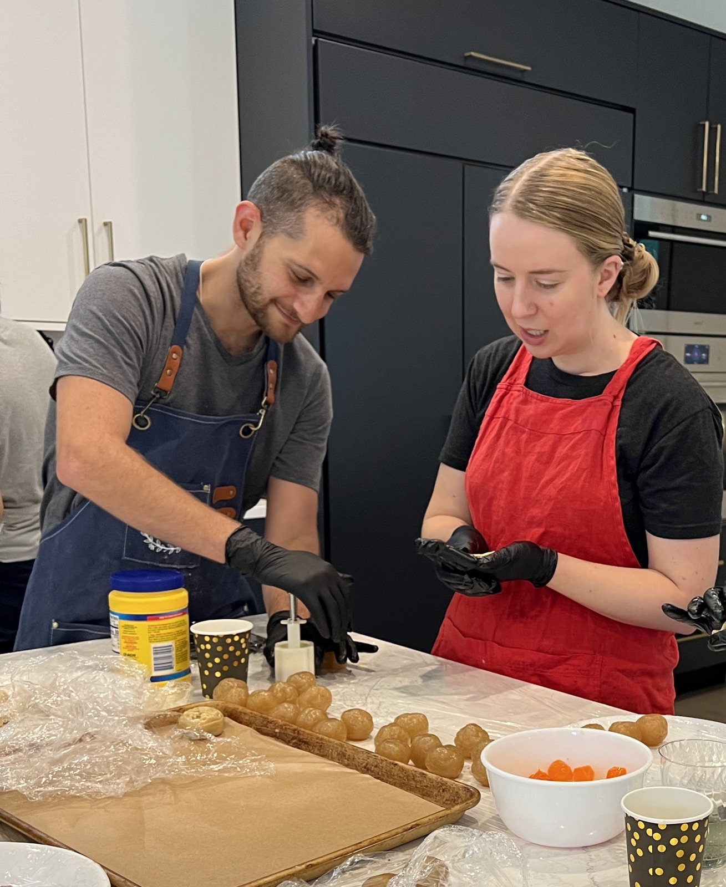
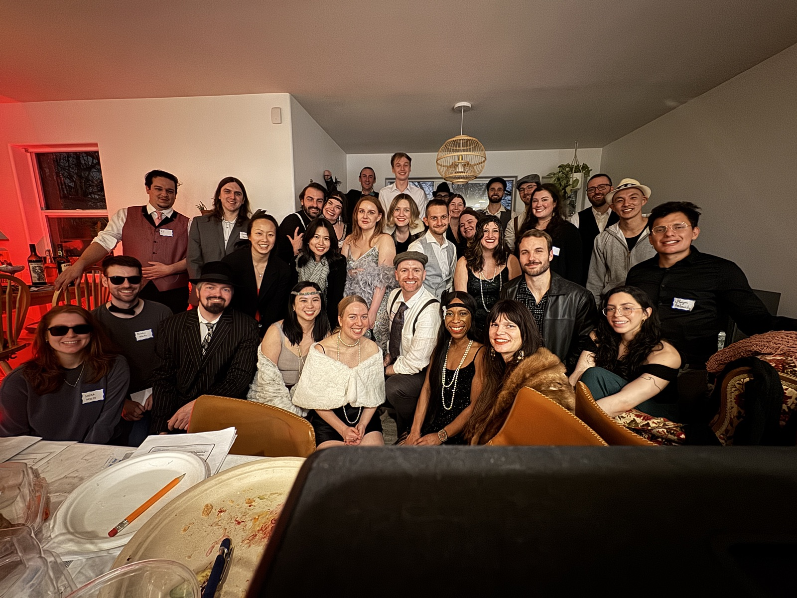
We aren't expecting gifts, but if you feel so inclined, we'd welcome contributions to our honeymoon fund or donations to causes we care about, including the Seattle Foundation, the ACLU, or Julia's mutual aid group.
If you send something by Venmo, please include a note saying where you'd like it to go, so we can make sure it ends up in the right place.
Venmo